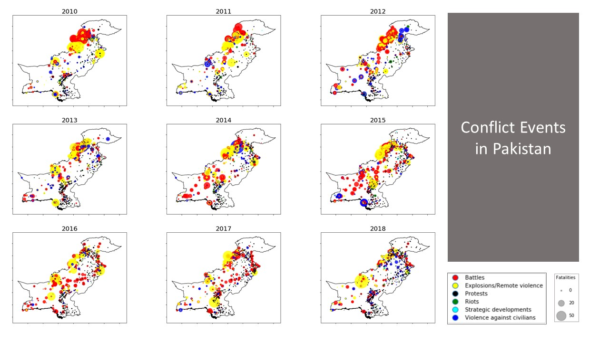
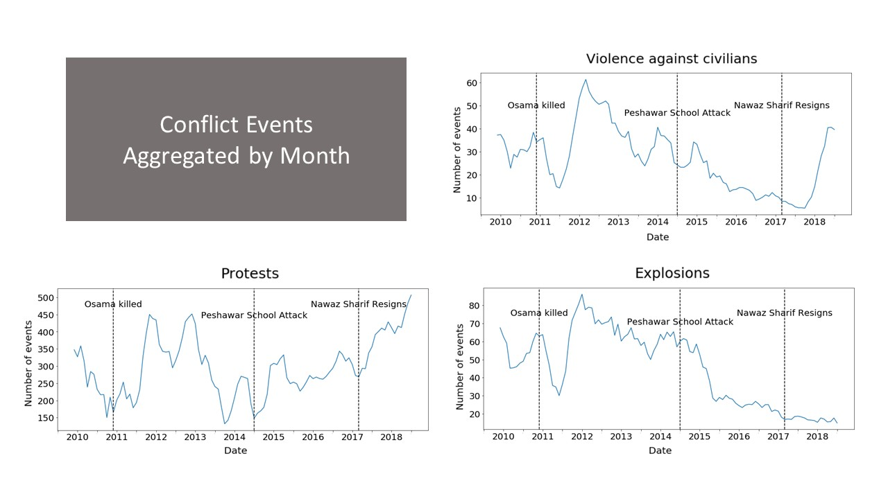
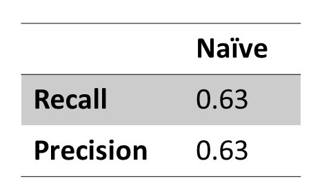
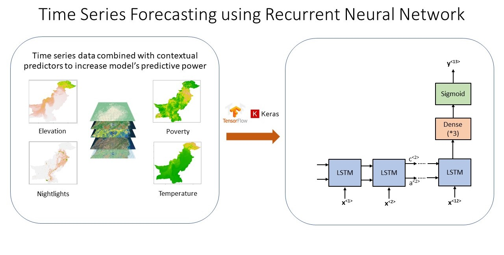
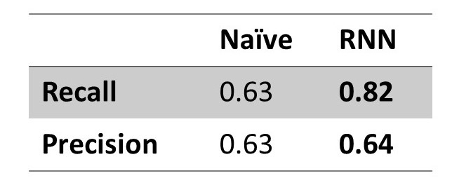
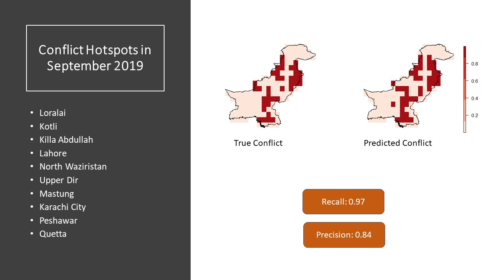

Conflict prediction is a crucial issue for the international community, especially for countries in fragile contexts - armed conflict led to over 150,000 deaths across the globe in 2018 alone.
PeaceMap is a tool to predict civil conflict in fragile nation states across the world. This tool can help the governments in such delicate contexts, and intergovernmental organizations like the UN, and the World Bank, to develop a robust and effective early warning system for conflict prediction so as to save human lives and minimize economic costs.
My primary source of data is ACLED - the Armed Conflict Location & Event Data Project, which is a publicly available data repository cataloguing global conflict events on a daily basis. It is a real time data source on civil conflict, political violence, and protest in the developing world. Additionaly, I leveraged geospatial data for population, poverty, night time lights, elevation, and temperature. My data source for population and poverty is WorldPop, for night time lights is National Oceanic and Atmospheric Administration's Earth Observation Group, for elevation is CGIAR Consortium for Spatial Information, and for temperature is WorldClim.
Python : Keras | TensorFlow | Scikit-learn | Pandas | Numpy | Matplotlib
R : Raster | Rgdal | Rgeos
I showcase my analysis considering the case of Pakistan, on account of the country's history of political turmoil in the last decade. In the figure below, we can see a snapshot of conflict events in Pakistan from 2010-2018. The marker color in this figures signifies the type of event (such as battles, explosions etc.), and the marker size signifies the number of fatalities associated with each event. We can see how these incidents are clustered around very specific geographical areas (especially along the Northwestern border) and these spatial trends stay stable throughout the decade.
Furthermore, we can observe the number of conflict events (particularly battles and explosions) and fatalities reducing significantly in the northwestern region of the country from 2010 to 2018. This shows that the government's interventions to restore peace in this mountaneous region at the Afghan-Pak border were successful to some extent.

In this next figure, we see the monthly time trends in protests, explosions, and violence against civilians. The figure also includes a few important political events in the country's timeline for reference. We can see few interesting trends here - for example, Osama Bin Laden's death saw an increase in ‘Violence against civilians’ and ‘explosions’ probably because of Taliban's retaliatory tactics; the school attack in Peshawar led to a decreasing trend in explosions an increasing trend in protests; and Nawaz Sharif resigned amid rising protests. This figure shows us how major events influence the future.

My goal was to predict conflict events in the coming month at a spatial resolution of 100 km x 100 km. For the purpose of prediction, I define a conflict event as the occurance of one or more instances of battles, explosions, or violence against civilians in a given location in a given month.
A very simple way to do this would be to say that whatever happens in a location this month will happen next month. Using this approach, we get recall of 0.63, i.e. we can predict 63% of the conflict events that are going to happen next month, and a precision of 0.63, i.e. 63% of the events we predict are actually going to be true conflict events. This means that we would be missing almost 40% of conflict events if we were to use this approach.

In order to improve upon this basic model, I used Recurrent Neural Network with Long Short Term Memory units for time series forecasting of conflict. I combined the time series conflict data with predictors such as population, elevation, poverty etc. and fed my feature set into the model shown below.

Using this model, I obtained a recall of 0.82 which means that I reduced missed conflict events almost by half, and a precision of 0.64 which means that I did not increase wrongly identified events.

The figure below displays the conflict hotspots for September 2019. The figure on the left shows the conflict events that truly occured in September 2019, and the one on the right shows the conflct events predicted by the model. We can see that the model is predicting conflict very effectively.
